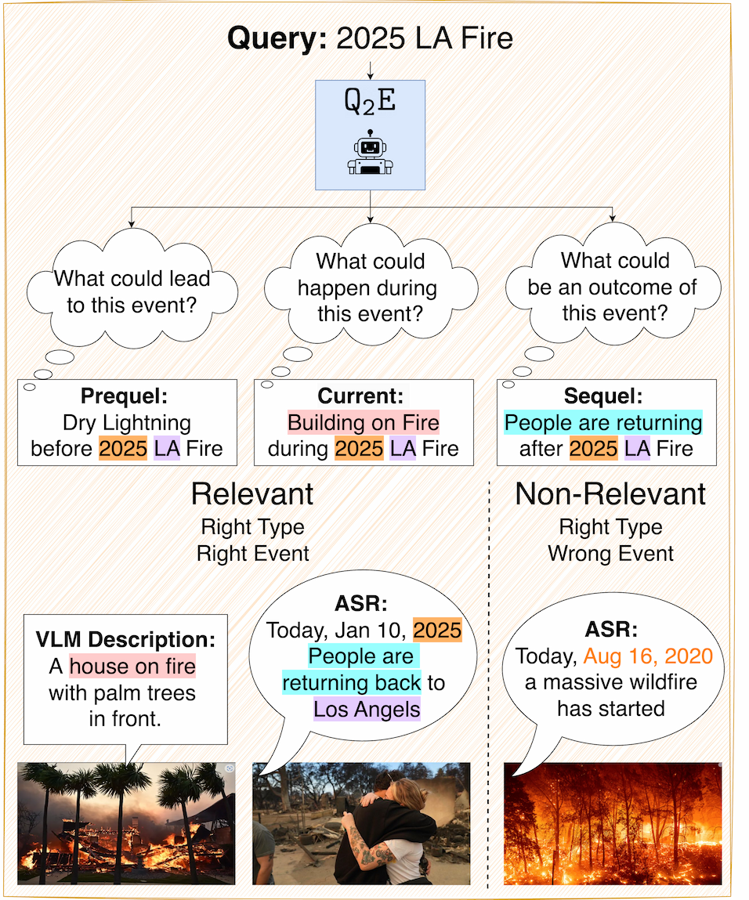
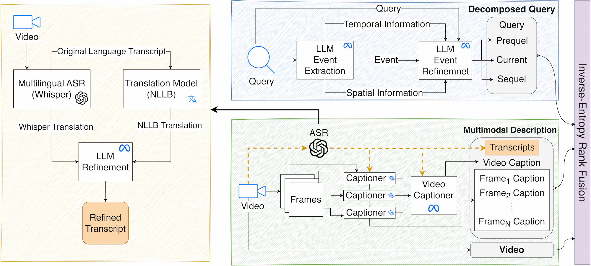

Recent approaches have shown impressive proficiency in extracting and leveraging parametric knowledge from Large-Language Models (LLMs) and Vision-Language Models (VLMs). In this work, we consider how we can improve the retrieval of videos related to complex real-world events by automatically extracting latent parametric knowledge about those events. We present Q2E: a Query-to-Event decomposition method for zero-shot multilingual text-to-video retrieval, adaptable across datasets, domains, LLMs, or VLMs. Our approach demonstrates that we can enhance the understanding of otherwise overly simplified human queries by decomposing the query using the knowledge embedded in LLMs and VLMs. We additionally show how to apply our approach to both visual and speech-based inputs. To combine this varied multimodal knowledge, we adopt entropy-based fusion scoring for zero-shot fusion. Q2E outperforms the previous SOTA on the MultiVENT dataset by 8 NDCG points, while improving on MSR-VTT and MSVD by 4 and 3 points, respectively, outperforming several existing retrieval methods, including many fine-tuned and SOTA zero-shot approaches.


| Prequel | Current | Sequel |
|---|---|---|
| Buildings shaking and swaying due to the earthquake in Anchorage, Alaska, on November 30, 2018 | Buildings shaking and crumbling during the 30 November 2018 earthquake in Anchorage, Alaska, South Central Alaska | Buildings crumbling or collapsing during the November 30, 2018 earthquake in Anchorage, Alaska |
| People running out of buildings and evacuating the area in Anchorage, Alaska during the earthquake on November 30, 2018 | People running out of buildings and evacuating the area during the 30 November 2018 Anchorage, Alaska earthquake | People running for cover or evacuating buildings during the November 30, 2018 earthquake in Anchorage, Alaska |
| Cars stopped on the road as the earthquake strikes in Anchorage, Alaska on November 30, 2018 at | Emergency responders rushing to the scene after the 2018 Anchorage, Alaska earthquake on November 30, 2018 | Emergency vehicles rushing to the scene of the 2018 Anchorage, Alaska earthquake on November 30, 2018 |
| Debris and objects falling from shelves and ceilings during the 30 November 2018 Anchorage, Alaska earthquake | Debris falling from buildings and damaging streets during the November 30, 2018 earthquake in Anchorage, South Central Alaska | Cracks forming in roads and highways in Anchorage, Alaska, South Central Alaska, after the 30 November 2018 earthquake |
| Emergency responders rushing to the scene to assist with evacuation and relief efforts after the 30 November 2018 earthquake in Anchorage, Alaska, South Central Alaska | Cars stopped or abandoned on the road in Anchorage, Alaska, South Central Alaska due to the earthquake on November 30, 2018 | Debris falling from damaged structures during the 30 November 2018 earthquake in Anchorage, Alaska |
| Video Caption (w/o ASR) | |
|---|---|
| The video begins at an airport terminal where a person in a red shirt is engaged in a conversation, then abruptly shifts to a nighttime outdoor setting showing a silver SUV parked on a snow-covered driveway, captured by a security camera. The scene then transitions to a person entering a home with two dogs, followed by the person carrying a large object across a room. The video then cuts to a news report covering a significant road collapse in a snowy area, with emergency responders and vehicles present. A news anchor, Sebastián Martínez Valdivia, provides commentary on the incident from an office setting. The report expands to cover seismic activity around the Aleutian Islands, Alaska, displaying maps from the U.S. Geological Survey. The video then shows scenic views of a snow-capped mountain range and a body of water, followed by a helicopter flying over a snowy landscape, suggesting a search and rescue operation. An aerial view of a large hole in the ground adjacent to a highway is shown, emphasizing the impact of natural disasters. The video concludes with an interior view of a dimly lit room, possibly shifting focus to the human impact or response to the situation. Overall, the video appears to cover various aspects of natural disasters, including road collapses, seismic activity, and rescue operations, interspersed with scenes that may relate to the personal or human side of these events. | |
| Video Caption (with ASR) | ASR Transcript |
| A 7.0 magnitude earthquake struck Anchorage, Alaska, causing significant damage and disruption to the city's infrastructure. The quake, which occurred on a Friday morning, triggered a tsunami warning that was later canceled, and resulted in major infrastructure damage, fires, and power outages affecting up to a third of the local power company's customers. The earthquake was followed by over 30 aftershocks in the subsequent three hours, with magnitudes ranging from 2.7 to 5.7. The event prompted Alaska's Governor to issue a disaster declaration and tour the damage from the air with the state's National Guard. The video depicts various scenes of the earthquake's impact, including damaged roadways, landslides, and emergency response efforts, as well as serene landscapes and news reports providing updates on the situation. The footage also shows the effects of the earthquake on local residents, with home security cameras capturing the disturbance and damage within household settings. Overall, the video provides a comprehensive view of the earthquake's impact and the subsequent response efforts in Anchorage, Alaska. | A 7.0 magnitude earthquake hit Anchorage, Alaska on Friday morning, causing significant damage. A local resident's home security system captured the sounds of the quake, which showed lights in the distance suddenly disappearing, followed by multiple bright flashes. The quake hit at about 8:30 a.m. local time. A tsunami warning was issued, but it was canceled shortly after. The Anchorage Police Department reported major infrastructure damage across the city, with at least three fires breaking out and videos showing significant damage to roadways. The local power company stated that up to a third of its customers were without power, a major concern in a region where high temperatures are in the low 20s to mid 30s. In the three hours following the earthquake, the U.S. Geological Survey recorded over 30 aftershocks with magnitudes ranging from 2.7 to 5.7. Aftershocks are common in Alaska. The Anchorage region is home to more than half of the state's population. Alaska's Governor, Bill Walker, issued a disaster declaration before touring the damage with the state's National Guard. |
| Method | Pre@1 ↑ | Pre@5 ↑ | Pre@10 ↑ | Re@1 ↑ | Re@5 ↑ | Re@10 ↑ | MRR ↑ | NDCG ↑ | MAP ↑ | Mean Rank ↓ | Median Rank ↓ |
|---|---|---|---|---|---|---|---|---|---|---|---|
| MC | 9.83 | 44.32 | 70.82 | 88.80 | 80.77 | 65.25 | 0.92 | 75.34 | 86.33 | 22.12 | 6 |
| IV2 | 5.60 | 28.92 | 49.12 | 51.35 | 53.28 | 45.44 | 0.68 | 50.43 | 63.77 | 235.49 | 11 |
| MC + Q2E | 10.24 | 46.71 | 75.76 | 92.28 | 85.25 | 69.73 | 0.95 | 80.04 | 89.42 | 21.13 | 6 |
| MC + Q2E + ASR | 10.32 | 49.00 | 79.60 | 93.05 | 88.73 | 73.09 | 0.95 | 83.24 | 91.20 | 16.44 | 6 |
| IV2 + Q2E | 9.54 | 40.88 | 63.40 | 87.26 | 75.21 | 58.73 | 0.92 | 69.15 | 83.96 | 53.84 | 7 |
| IV2 + Q2E + ASR | 10.24 | 44.94 | 70.79 | 92.28 | 81.85 | 65.14 | 0.95 | 76.10 | 88.09 | 42.81 | 6 |
| MC | 43.52 | 69.05 | 76.88 | 43.62 | 13.85 | 7.71 | 0.54 | 59.72 | 54.27 | 20.29 | 2 |
| IV2 | 52.56 | 73.07 | 80.10 | 52.66 | 14.65 | 8.03 | 0.62 | 66.07 | 61.62 | 25.12 | 1 |
| MC + Q2E | 44.52 | 71.26 | 79.40 | 44.62 | 14.29 | 7.96 | 0.56 | 61.51 | 55.84 | 17.91 | 2 |
| MC + Q2E + ASR | 46.23 | 73.37 | 81.71 | 46.33 | 14.71 | 8.19 | 0.58 | 63.59 | 57.83 | 18.73 | 2 |
| IV2 + Q2E | 53.47 | 73.57 | 82.11 | 53.57 | 14.75 | 8.23 | 0.62 | 67.16 | 62.47 | 16.73 | 1 |
| IV2 + Q2E+ ASR | 56.28 | 76.58 | 83.72 | 56.38 | 15.36 | 8.39 | 0.65 | 69.53 | 65.06 | 15.85 | 1 |
The best score for each dataset is in bold and the best in baselines is underlined.
More ablation results are presented in the paper.
@article{dipta2025q2e,
title={Q2E: Query-to-Event Decomposition for Zero-Shot Multilingual Text-to-Video Retrieval},
author={Dipta, Shubhashis Roy and Ferraro, Francis},
journal={arXiv preprint arXiv:2506.10202},
year={2025}
}